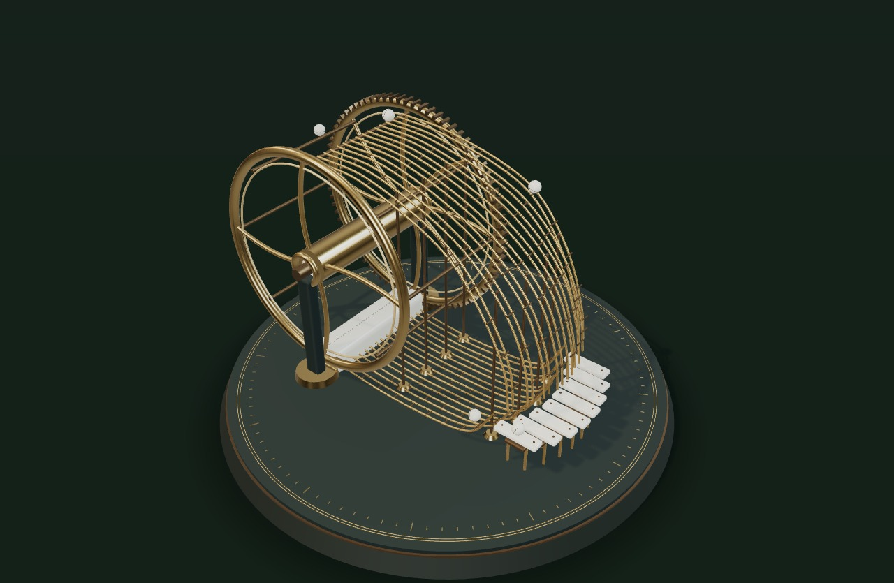

This instrument needs WebGL 2 to move.
Follow a marble. Every note begins with a touch.
Keyboard: focus the sculpture and use the arrow keys to orbit, + / − to zoom, Home to reset. The time control and Notes offer another way to play.
Copy this link. It includes your voices, composition, and point of view. It opens quietly.